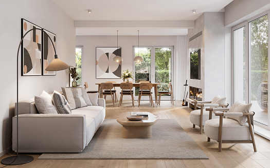

swarna Ashok kumar snips a play
The Last Straw _Bosworth Crocker_
SCENE: _The basement of a large apartment-house in New York City.
SCENE: _The kitchen of the Bauer flat in the basement of the Bryn
Mawr. A window at the side gives on an area and shows the walk
above and the houses across the street. Opposite the windows is a
door to an inner room. Through the outer door, in the centre of the
back wall, a dumb-waiter and whistles to tenants can be seen. A
broken milk-bottle lies in a puddle of milk on the cement floor in
front of the dumb-waiter. To the right of the outer door, a
telephone; gas-range on which there are flat-irons heating and
vegetables cooking. To the left of the outer door is an old
sideboard; over it hangs a picture of Schiller. Near the centre of
the room, a little to the right, stands a kitchen table with four
chairs around it. Ironing-board is placed between the kitchen table
and the sink, a basket of dampened clothes under it. A large
calendar on the wall. An alarm-clock on the window-sill. Time: a
little before noon. The telephone rings_; MRS. BAUER _leaves her
ironing and goes to answer it_.
MRS.BAUER.
No, Mr. Bauer's out yet
[_She listens through the
transmitter._]
Thank you, Mrs. Mohler
[_Another pause._]
I'll tell him just so soon he comes in--yes, ma'am.
[MRS. BAUER _goes back to her ironing. Grocer boy rushes into
basement, whistling; he puts down his basket, goes up to_ MRS.
BAUER'S _door and looks in_]
LANE.
Say--where's the boss?
MRS. BAUER.
He'll be home soon, I--hope--Jim. What you want?
[_He stands looking at her with growing sympathy._
LANE
Nothin'. Got a rag 'round here? Dumb-waiter's all wet.... Lot of
groceries for Sawyers.
MRS. BAUER.
[_Without lifting her eyes, mechanically hands him a mop
which hangs beside the door._]
Here.
LANE.
What's the matter?
MRS. BAUER.
[_Dully._]
Huh?
LANE.
[_Significantly._]
Oh, I know.
MRS. BAUER.
What you know?
| Character |
Actor |
Understudy |
| BAUER |
sapthagiri |
venu madhav |
| lANE |
master bharth |
m.s.narayana |
secondact.html page

-->